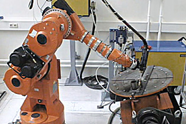
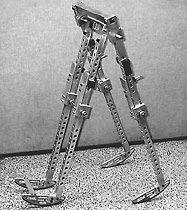

1990 gibt es mehr als 40 jap. Firmen, u.a. die Giganten Hitachi und Mitsubishi, die sich auf die Produktion von kommerziellen Robotern spezialisieren. Cheap Design: Das Prinzip von Cheap Design geht davon aus, dass biologische Systeme immer extrem einfach und "billig" entstanden sind (durch die Evolution) und versucht dies beim Bau und der Erforschung von Robotern und Künstlicher Intelligenz einzusetzen, um so Gratis-Effekte zu nützen die (fast) keiner Steuerung und/oder Energie bedürfen. Der "Passive Dynamic Walker" ist ein Beispiel für Cheap Design. Tad McGeer zeigte um 1990, dass ein einfacher Mechanismus mit zwei Beinen eine Rampe hinunter gehen kann, ohne zusätzliche Energie oder ein Gehirn zu brauchen.